简单总结一下：选梯子，下软件，买线路，导入线路，使用梯子，下载软件，很简单的
梯子只是个称呼，是我们用于访问外网的工具，要是不挂梯子会被限制访问，而就投票和其他用途的APP来说，几乎都是外网软件，所以需要梯子才能正常使用，所以翻墙也就是我们所说的访问外网了
苹果可选下面两个免费的（用韩区ID搜索，创ID最后有教程）
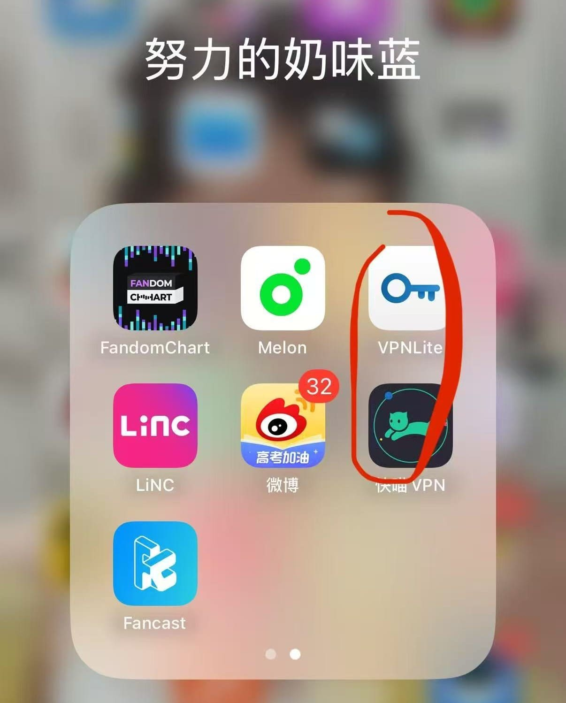
安卓可选价不高且流量较多但是线路较少的一元机场，链接：https://zhverge.com/#pricing
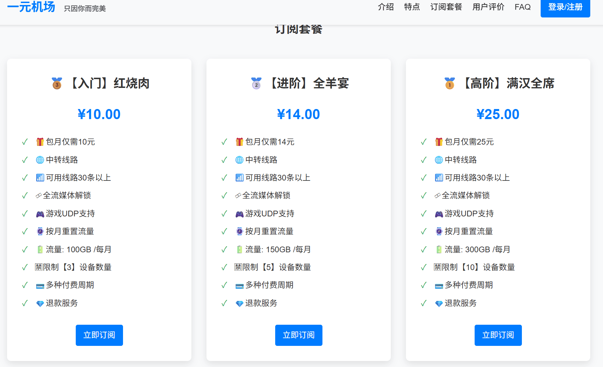
就🍎和安卓都能用的话，比较合适的就是价不高且稳定的樱花猫（sakura cat），购买🔗：https://sakura-cat1.com （点此跳转，下面也是）
樱花猫是🍎和安卓用户都能用的梯子，看清楚是iOS还是安卓选择就好
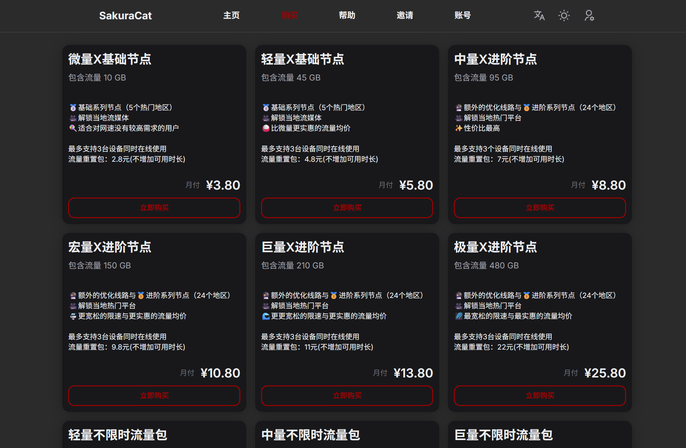
不要直接在浏览器里搜，会下到盗版，要去官网下
樱花猫里包括本身的安装包和clash（一元机场买的线路可以在这个软件用）的安装包，根据设备需求选择即可
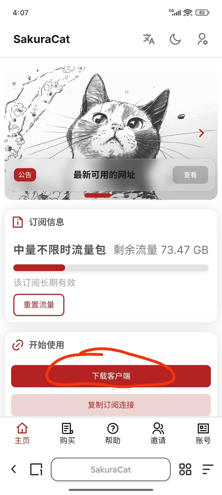
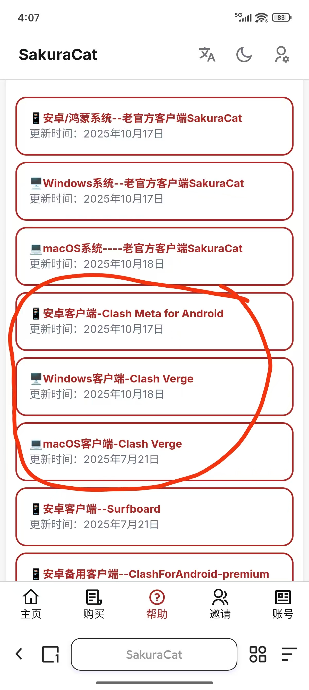
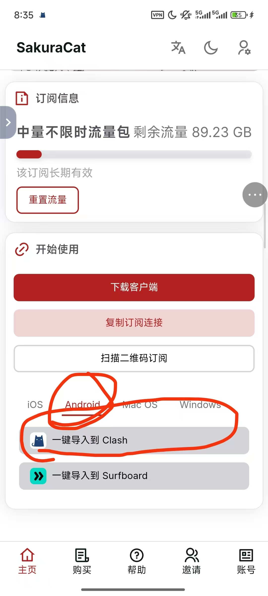
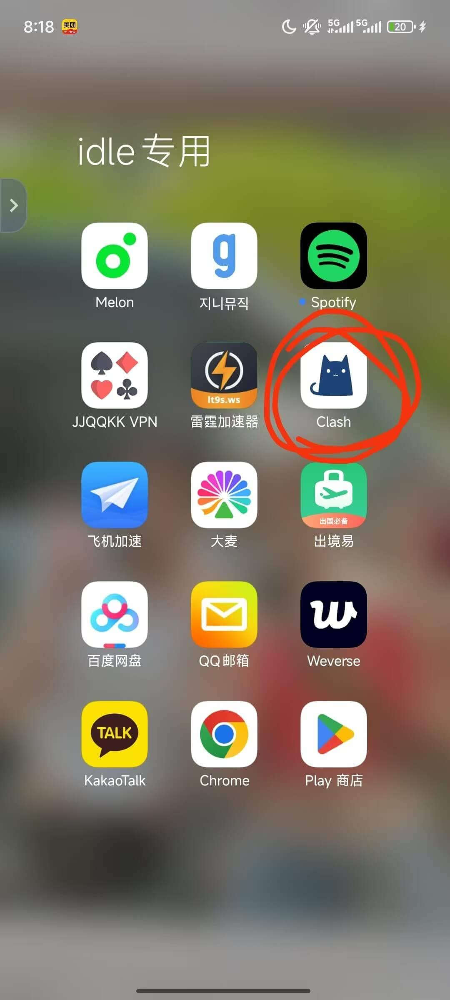
从上面樱花猫的🔗进去网页，买好流量套餐后再点击这里就可以先下载clash进行导入了，一般允许三个设备同时登
梯子搞好之后就是大家必备的下载数据相关APP的软件
苹果：
这里🍎用户使用自带的apple store,切换外网ID就好，外网ID需要自己注册或买或借，可以找群里面的奶啵啵借来下载软件（往下翻有注册教程）
安卓
安卓使用谷歌商店或者安大师进行下载（安大师推荐荣耀用户）。安卓下载谷歌商店需要先下载谷歌框架支持运行，下载好之后只需要挂梯就能下载相关APP了
谷歌商店下载链接：https://www.pchome.net/app/528686.html（有的手机可以在应用商店下载谷歌play商店，如下图所示，可以找找）
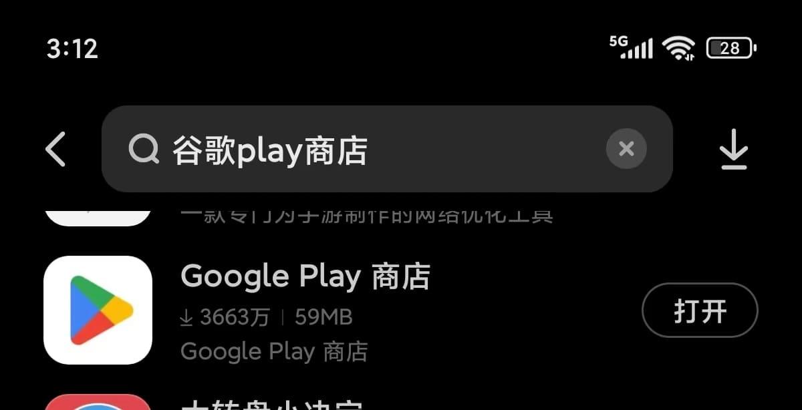
谷歌框架：https://m.ddooo.com/softdown/200169.htm
需要谷歌浏览器的可以在谷歌商店下载，谷歌浏览器可有可无，有时候打开外网的链接会比较快
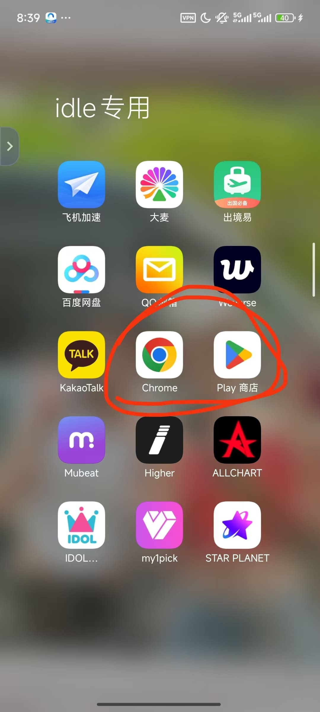
谷歌框架一般安卓用户下载不会显示在桌面，算是系统内置了
打投APP的下载尽量不要使用安装包，因为需要频繁更新且易闪退，搞好谷歌商店之后挂梯去谷歌商店搜索着下载即可（🍎用户搜不到就切ID）
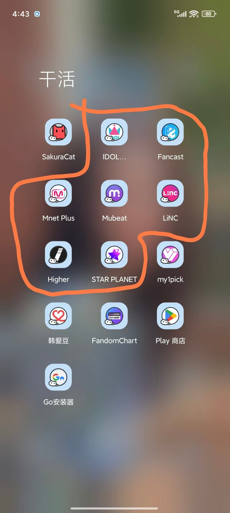
打歌相关的APP具体就这七个APP，这张图mubeat为音乐中心的投票软件，LINC为人气歌谣事前投票软件，higher是人气歌谣实时投票软件，idol Champ是冠军秀的投票软件，star planet是the show的投票软件，FANCAST是音乐银行的投票软件
这个mnet plus是MAMA的相关投票软件，另外也是MCD的事前和实时投票软件，不需要攒，（安卓用户可以进行大量分身多开，会用点击器的可以试着自动化投票（多开和点击器见点击器那个模块））
其中有些APP是有大量备号的，大家可以私信大马哈和其他群管理领号攒票或者投票
创建外区ID
首先创建一个外区ID，否则应用商店搜不到相应的软件
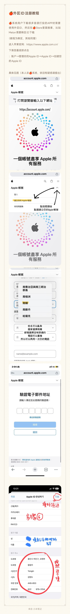
注册完之后用此账户在app store里下载
点击目录或底部链接，平滑跳转至对应板块。